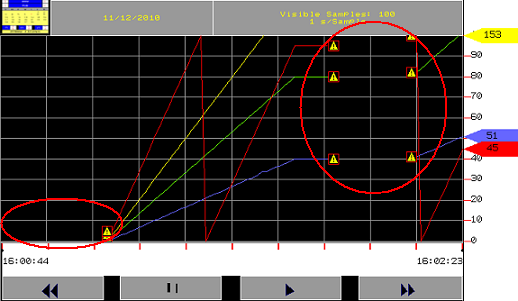
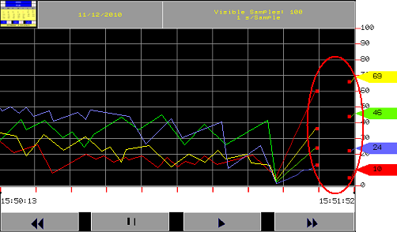
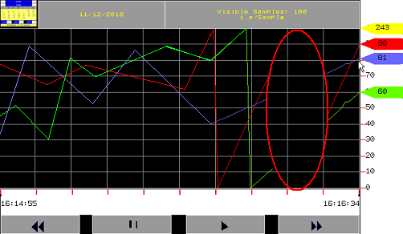
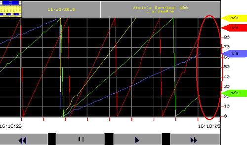
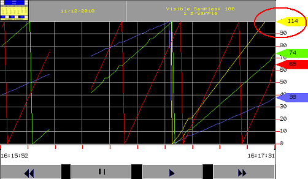
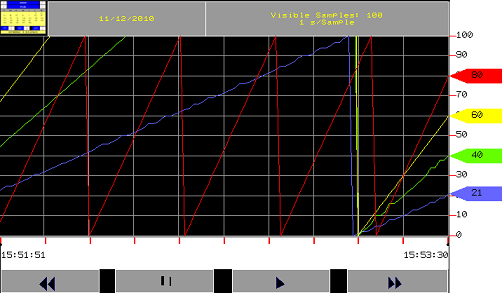

|
|
|
|
|
|
|
|
You can display historical data in a line graph by using the Historical Trend Graph. A typical historical trend graph displays current values but also allows you to view past data that has been collected.

Historical Trend Graphs are only supported on target machines that are designed with 20X20 touch areas. For a list of the targets and their supported touch areas, see Appendix 5, Hardware Specifications.
To view the historical data, you can first pause the graph, then specify the date and time of the historical data you want to view.
The Historical Trend Graph's Rewind and Fast Forward buttons enable you to scan the data by time. The Historical Trend Graph's calendar enables you to view data by date.

Touching or clicking the following buttons pauses the current display and changes the graph into historical data view.

You can get a zoom in/out view of the sampled data horizontally (X-axis) and vertically (Y-axis), by defining valid values in the NumOfSamples and ValueMin/ValueMax properties for the Historical Trend Graph. The NumOfSamples property indicates the number of data samples to display in a trend graph view, and the ValueMin/ValueMax properties define the minimum and maximum values for the variable assigned to each channel of the graph. The following is an example:
The top image shows a zoomed-out historical trend graph view when NumOfSamples is 11, ValueMin is 0, and ValueMax is 100. The bottom image shows a zoomed-in historical trend graph view when NumOfSamples is 5, ValueMin is 0, and ValueMax is 30.

At Runtime, when you zoom in, less data samples are displayed. When you zoom out, more data samples are displayed. As a result, the NumOfSamples information in the Historical Trend Graph header is updated during the zoom-in and zoom-out.
You can use the zoom feature while the trend graph is running or pausing. The maintenance mode, data quality, and power-off indicators still display when using the zoom feature. All Historical Trend Graph buttons (Rewind, Pause, Play, Fast Forward) and the calendar are functional after the zoom in/out.
At Runtime, the maximum number of samples that can be displayed depends on the width of the Historical Trend Graph in pixels. For example, a 3D Historical Trend Graph (Trend3D_01) has an approximate width of 320 pixels. If the lowest trend sampling rate is 1 sample per day, you can zoom out to a maximum of approximately 320 days. If the lowest trend sampling rate is 1 sample per minute, you can zoom out to a maximum of approximately 5 hours and 20 minutes. If the number of samples exceed the trend graph's width, the plus symbol (+) displays in header information, for example:
Data samples plotted by number of samples: Visible Samples: 320+
Data samples plotted by time: 5:20:00+
If you select data samples to display on a historical trend graph by time, the minimum time duration that can be displayed at runtime is 1 second. If you set a time duration less than the minimum, at runtime the time duration is ignored and is reset to the minimum.
Touching or clicking on the calendar icon, located at the upper left corner of the Historical Trend Graph, displays the calendar window. Choose a date and time from the calendar and click OK. The Historical Trend Graph pauses and displays the defined historical data.


The trend graph is not updated while paused, but as soon as you touch the Play button the trend graph resumes the display which includes any data that was collected while the graph was paused.
When using historical trend graphs on popup windows:
Make sure the popup window is big enough to accommodate the calendar, which is 180x240 pixels
Draw the historical trend graph enough distance from the bottom and right edges of the popup window to accommodate the calendar.
During Runtime, the following events may occur to affect the plot trend graph drawing:
Data quality is bad or unknown due to, for example, PLC communication problems. Bad data quality is indicated on the historical trend graph by the bad data quality symbol.
In the following example, bad data quality occurred twice between 16:00:44 and 16:02:23. The symbol displays at the start and end of the bad data quality in the trend graph. During the time of bad data quality, no data is recorded and no line is drawn on the historical trend graph due to problems (for example, communication errors). After data quality recovery, data samples will be plotted on the historical trend graph.

Runtime goes into maintenance mode, so you can remove the CF Card/SD Card or perform other maintenance work on the panel, such as checking communication cables. While in maintenance mode, the red square symbol displays on the historical trend graph and logging stops until you exit from maintenance mode. For more information, see Section 20.5.4, Performing Maintenance on the Panel.
In the following example, maintenance mode started and ended just before 15:51:52. The red square symbol displays at the start and end of maintenance mode. During that time, no logging occurs, and no line is drawn on the historical trend graph.

The target powers off. When this occurs, if data storage is DRAM, you will lose all the sampled data on the historical trend graph before the power off. When the power comes back on, the trend graph starts fresh with no history of previously sampled data. If data storage is SRAM or SRAM and File, sampled data will continue to be plotted on the historical trend graph when power returns, next to the last plotted sampled data before the power off.
In the following example, the target experienced a power-off at around 16:16:10. No data samples are plotted and no lines are drawn on the historical trend graph during the power-off. The trend graph plots data samples when the power comes back on at around 16:16:25.

Interlock on the data logging group is enabled and the Interlock variable on a data logging group is set to 0 (OFF). When this occurs, no data samples are plotted on the historical trend graph. When the Interlock variable is set to 1 (ON), data samples are plotted on the trend graph.
In the following example, the Interlock variable value is set to 0 (OFF) just before 16:18:05. During that time, no data is recorded and no line is drawn on the historical trend graph.

The variable value exceeds the trend graph range. When the variable value goes out of range, the pen indicator displays the value that is out of range, and the sample will not display.
In the following example, the value of the variable to plot the yellow curve has exceeded the upper limit of 100. The yellow pen indicates a value of 114. Since the variable value is out of the trend graph range, the sample does not display. The yellow curve displays on the trend graph when the variable value is within the trend graph range.

Multiple channels have been set up for a historical trend graph. The trend graph plots different collections of sampled data. In the historical trend graph properties, you can specify how many channels you want to use. The following example shows 4 channels plotting at the same time.
